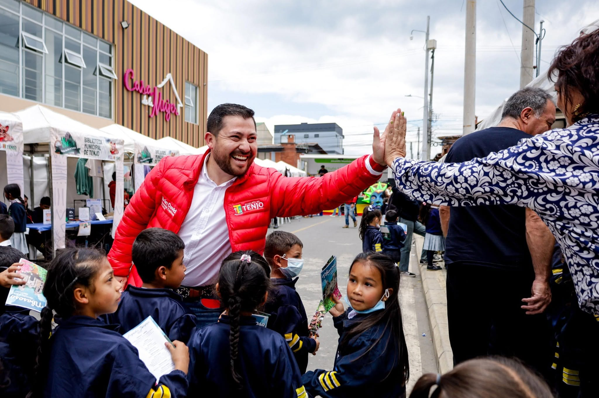

I Festival del Libro de Tenjo
Territorios bioculturales 2025

El I Festival del Libro de Tenjo “Territorios bioculturales 2025” se realizó como un espacio para promover la lectura, la escritura, la creación literaria y la difusión cultural, generando un punto de encuentro entre escritores, editoriales, librerías, bibliotecas, escuelas de literatura, emprendimientos y comunidad. El evento contó con la asistencia de 1.045 personas, incluyendo instituciones educativas públicas y privadas de Tenjo y otros municipios, escuelas de literatura, integrantes de la Red de Bibliotecas Públicas y comunidad en general. Durante las dos jornadas se desarrollaron 6 muestras culturales, 12 conversatorios, 18 talleres, 3 lanzamientos de libros, 4 espacios de promoción de lectura, 4 exposiciones de libros de escritores independientes y la presentación de un cortometraje, además de la participación de 3 librerías, 1 editorial, 5 bibliotecas municipales, 2 escuelas de literatura y 12 emprendimientos. El festival tuvo un impacto positivo al propiciar alianzas, intercambio de conocimientos y oportunidades de visibilización para proyectos culturales y emprendimientos; los talleres y conversatorios alcanzaron aforo completo, y participantes, talleristas, instituciones educativas y comunidad destacaron la organización y la creación de un nuevo espacio municipal para la promoción de la lectura y el libro. Además, los emprendimientos participantes manifestaron satisfacción por las oportunidades de promoción y comercialización, evidenciando el aporte del festival al fortalecimiento cultural, educativo y comunitario del municipio.